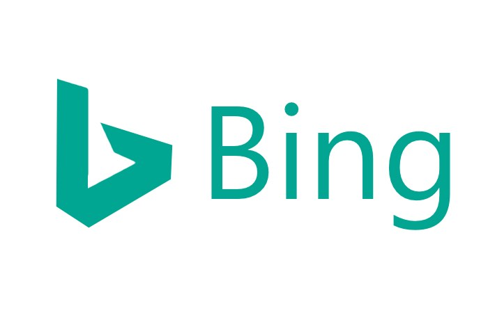

Google
Поисковая система Google занимает более 60 % мирового рынка. Ежедневно она регистрирует около 50 млн поисковых запросов и индексирует более 8 млрд веб-страниц. Google может находить информацию на 191 языке (на 2 декабря 2009).
Интерфейс Google содержит довольно сложный язык запросов, позволяющий ограничить область поиска отдельными доменами, языками, типами файлов
Yandex
Поиск Яндекса позволяет искать документы на русском, татарском, украинском, белорусском, казахском, турецком, английском, немецком и французском языках с учётом морфологии этих языков и близости слов в предложении.
С начала 2006 года по 2009 год поиск «Яндекса» был установлен на портале Mail.ru.
С 23 июня 2011 года поиск «Яндекса» установлен на портале Rambler.

Yahoo!
Yahoo — это американский интернет-сервис, который предоставляет огромный спектр услуг и развлечений в интернете. Будь то школьник или пенсионер - каждый найдёт для себя интересующую тему. Самыми популярными услугами, предоставляемыми Yahoo, являются: система поиска

Bing
поисковая система, разработанная международной корпорацией Microsoft. Bing была представлена генеральным директором Microsoft Стивом Балмером. Ранее имела следующие наименования и адреса:
Кроме того, с октября 2006 до января 2009 года действовал сайт Ms. Dewey (www.msdewey.com), а с августа 2007 до 30 июня 2009 года — Tafiti (tafiti.com), основанные на тех же технологиях Live Search, но имевшие иной, экспериментальный интерфейс.
В настоящее время сайт Bing занимает 2-е место в списке самых популярных поисковых сайтов по объёму трафика[1], в отличие от которых обладает рядом возможностей, таких как просмотр результатов поиска на одной странице (вместо пролистывания многочисленных страниц результатов поиска)[2], а также динамическое корректирование объёма информации, отображаемой для каждого результата поиска (например, только название, краткая или большая сводка), встроенный поиск значения слов в Microsoft Word.

Rambler
интернет-холдинг, включающий в качестве сервисов поисковую систему, рейтинг-классификатор ресурсов российского Интернета, информационный интернет-портал.
Поисковая система Рамблер понимает и различает слова русского, английского и украинского языков. По умолчанию поиск ведётся по всем формам слова. По умолчанию в Рамблере результаты ранжируются по степени соответствия (релевантность) запросу и группируются по сайтам.
Настройки языка поиска: любой, русский, английский, украинский. Учитывается морфология.
25 ноября 2009 года Rambler стал лауреатом конкурса «Премия Рунета» в номинации «Культура и массовые коммуникации.